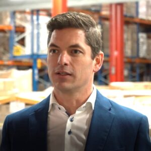

Bij Optimum Logistiek, een vooraanstaand adviesbureau opgericht door Martijn Scholtes, specialiseren we ons in het ontwerpen en voortdurend verbeteren van logistieke processen voor organisaties. Onze kernmissie is het realiseren van strategische doelstellingen door middel van logistieke optimalisatie, waarbij we verder kijken dan traditionele adviesrapporten. Onze aanpak is gericht op de daadwerkelijke implementatie en realisatie van verbeteringen, specifiek afgestemd op de unieke behoeften van elke organisatie.
Onze Grondlegger

Martijn's reis in de logistiek en supply chain management begon direct na zijn studie, waar hij zich specialiseerde in bedrijfskunde en IT. Zijn deskundigheid en toewijding hebben geleid tot de opbouw van een uitgebreid netwerk en de succesvolle uitvoering van projecten voor toonaangevende klanten zoals Albert Heijn, Heineken en Danone.
De projecten onder leiding van Martijn omvatten een breed scala aan initiatieven, van de selectie en implementatie van Warehouse Management Systems (WMS) en het uitvoeren van haalbaarheidsstudies voor nieuwe distributiecentra, tot het begeleiden van logistieke uitbestedingstrajecten en het optimaliseren van opslagcapaciteit en orderpick operaties. Zijn methodiek is naadloos afgestemd op de behoeften van de organisatie en het specifieke vraagstuk, resulterend in maatwerkoplossingen die effectief zijn.
Professionele Achtergrond
Martijn staat bekend om zijn gedrevenheid en pragmatische aanpak. Hij streeft ernaar concrete verbeteringen te realiseren die direct bijdragen aan het bedrijfsresultaat. Zijn methodiek gaat verder dan alleen het adviseren; hij is actief betrokken bij de implementatie van deze adviezen om te zorgen voor daadwerkelijke en duurzame verbeteringen.
Expertise
Data-analyse en business case-ontwikkeling
logistieke uitbestedingtrajecten
Magazijninrichting en mechanisatie
Project- en programmamanagement
WMS-selectie en implementatie
Procesoptimalisatie en systeemintegratie
Onze Missie
Optimum Logistiek staat voor het creëren van toegevoegde waarde door logistieke processen niet alleen te optimaliseren maar ook te aligneren met de strategische doelstellingen van onze klanten. Wij geloven in het bieden van concrete, uitvoerbare oplossingen die een directe impact hebben op het bedrijfsresultaat van onze klanten.